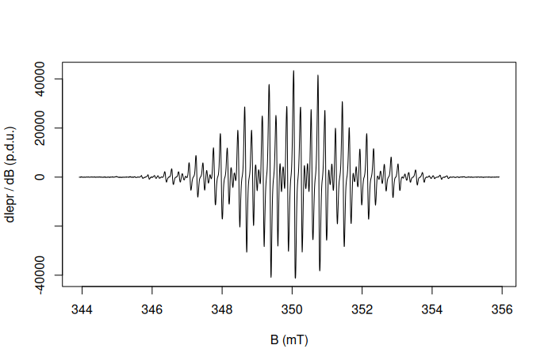

\(\require{mhchem}\)
This article/vignette deals with essential syntax and/or basic commands to run the eprscope functions. For details or more advanced programming experience, please refer to the resources in README file/Homepage. Sections, discussing the basics of plotting (several plots will be already presented) and operations with strings will be added in the upcoming package versions.
1 Variable/Function Names and Assignment
Any name, even the complex one (see vide infra), can be applied to assign the variable/function. It is common to use complex names with the parts separated either by underscore ..._... or by dot, like stated in the examples below. Both assignment operators (<- and =) can be used in  language. However, the application of the first one is preferred, due to the fact that the
language. However, the application of the first one is preferred, due to the fact that the = is a pure assignment operator and it does not necessarily initialize a variable in the namespace (e.g. as arguments in a function, see below). Whereas, the <- always creates a variable (1–4). In order to improve the code readability, comments may be included, starting the line with the hash symbol # like shown in the following code chunks.
# Q value (EPR sensitivity instrumental factor) assignment:
Q_value <- 3500
#
# loading package built-in example file/data => "TMPD_specelchem_accu_b.asc",
# which corresponds to the EPR spectrum of Wuster's blue:
tmpd.data.file <- load_data_example(file = "TMPD_specelchem_accu_b.asc")
# where `file` is the argument of the `load_data_example` functionThe file within the parentheses represents an argument of the function load_data_example() and its assignment must be solely provided by the = operator. If several arguments are defined, they have to be separated by , (“comma”).
2 Functions and Packages
Packages are fundamental units of shareable code. They may bundle functions, sample code, datasets, documentation and tests (5, 6). By default, during the  installation, only a couple of packages are set up (e.g. 
installation, only a couple of packages are set up (e.g. {base} , {datasets} , {graphics} , {grdevices} , {stats} , {utils} ). These are also immediately available, once you start the  console or Rstudio IDE (Integrated Development Environment). Additional packages must by installed and loaded explicitly in order to be utilized. To load such packages, the function
console or Rstudio IDE (Integrated Development Environment). Additional packages must by installed and loaded explicitly in order to be utilized. To load such packages, the function library() has to be executed. It actually refers to the (default) place (folder) where the üì¶ is stored on your computer, such as loading the collection of essential data science packages called {tidyverse}:
library(tidyverse)
#> ── Attaching core tidyverse packages ──────────────────────── tidyverse 2.0.0 ──
#> ✔ dplyr 1.1.4 ✔ readr 2.1.5
#> ✔ forcats 1.0.0 ✔ stringr 1.5.1
#> ✔ lubridate 1.9.4 ✔ tibble 3.2.1
#> ✔ purrr 1.0.4 ✔ tidyr 1.3.1
#> ── Conflicts ────────────────────────────────────────── tidyverse_conflicts() ──
#> ✖ dplyr::filter() masks plotly::filter(), stats::filter()
#> ✖ dplyr::lag() masks stats::lag()
#> ℹ Use the conflicted package (<http://conflicted.r-lib.org/>) to force all conflicts to become errorsSometimes a function/dataset/object from a certain üì¶ is called via ‚Äúspecial‚Äù syntax like package::function(). The double colon :: actually points to selection from the package NAMESPACE in order to prevent collisions when functions/datasets/objects from different packages possess the same name (e.g.¬†stats::filter() and dplyr::filter() , see also the massage after tidyverse loading, above)1. However, in most cases, one does not need to call each function like this and it is enough if library(package) command is executed at the beginning of the entire  script (which is also the case for the eprscope üì¶).
script (which is also the case for the eprscope üì¶).
3 Vectors and Matrices
In order to hold multiple data values of the same type (e.g. numeric, character or logical) the  language uses the vector object, which is created by the
language uses the vector object, which is created by the c(...) command/function (the “c” stands for “combine” or “concatenate”) like:
# creating a vector of EPR intensity
# normalization constant names
str.norm <- c("NumberOfScans","Concentration","QValue")
#
# ...and their corresponding values
value.norm <- c(24,1e-3,3500)
#
# preview of both vectors
str.norm
#> [1] "NumberOfScans" "Concentration" "QValue"
value.norm
#> [1] 2.4e+01 1.0e-03 3.5e+03The combination of different types automatically turns the vector components into character:
# combination/concatenation of both
# vectors created above
comb.norm <- c(str.norm,value.norm)
#
# preview
comb.norm
#> [1] "NumberOfScans" "Concentration" "QValue" "24"
#> [5] "0.001" "3500"To avoid such behavior one has to define a list as shown below. The length of a vector can be figured out by the length() function, counting the number of vector components:
# dermine the vector length (`comb.norm`)
length(comb.norm)
#> [1] 6Performing operations on individual elements requires indexing (vectors in  are 1 based indexing unlike the normal C or Python), which is quite simple and demonstrated by the following examples:
are 1 based indexing unlike the normal C or Python), which is quite simple and demonstrated by the following examples:
# select the third element
comb.norm[3]
#> [1] "QValue"
#
# select the last element
comb.norm[length(comb.norm)]
#> [1] "3500"
#
# remove the second and the fifth element
comb.norm[-c(2,5)]
#> [1] "NumberOfScans" "QValue" "24" "3500"
#
# ...or the same selection
# by logical operations:
comb.norm[c(TRUE,FALSE,TRUE,TRUE,FALSE,TRUE)]
#> [1] "NumberOfScans" "QValue" "24" "3500"
#
# replace the fourth element
comb.norm[4] <- 50 # or "50"
#
# the actual `comb.norm` vector
# (with replacement of the 4th element)
comb.norm
#> [1] "NumberOfScans" "Concentration" "QValue" "50"
#> [5] "0.001" "3500"The basic arithmetic operations on vectors are also performed element-wise:
# create vector of 10 numeric values,
# repeating `0.1` 10-times
vec.01 <- rep(0.1,times = 10)
#
# vector of B_{central} (magnetic flux density)
# in Gauss to calculate the g_{iso} values
B.central.vec <- c(
3485.22,3490.47,3491.78,3488.35,3492.55,
3489.21,3491.99,3491.47,3492.50,3490.23
)
#
# addition (+ preview)
add.vec <- vec.01 + B.central.vec
add.vec
#> [1] 3485.32 3490.57 3491.88 3488.45 3492.65 3489.31 3492.09 3491.57 3492.60
#> [10] 3490.33
#
# multiplication (+ preview, values in mT)
multiple.vec <- vec.01 * B.central.vec
multiple.vec
#> [1] 348.522 349.047 349.178 348.835 349.255 348.921 349.199 349.147 349.250
#> [10] 349.023
#
# microwave frequency to calculate the g_{iso}
nu.GHz <- 9.892546
#
# operation (calculate g_{iso}) in a loop, iteration
# through all elements (i) of the `B.central.vec`
vec.g.iso.a <- sapply(
B.central.vec, {function(i)
eval_gFactor(
nu.val = nu.GHz,
B.val = i,
B.unit = "G"
)}
)
# such operation is an equivalent
# (simplification of) to `for` loop
vec.g.iso.b <- c()
for (i in seq(B.central.vec)) {
vec.g.iso.b[i] <- eval_gFactor(
nu.val = nu.GHz,
B.val = B.central.vec[i],
B.unit = "G"
)
}
# preview (comparison)
vec.g.iso.a
#> [1] 2.02799 2.02494 2.02418 2.02617 2.02374 2.02567 2.02406 2.02436 2.02377
#> [10] 2.02508
identical(vec.g.iso.a,vec.g.iso.b) # Are these vectors identical ?
#> [1] TRUEPrevious examples show, how the vectors can be created by loops . However in to order to calculate the giso-values, one can just simply use the eval_gFactor() function on the entire B.central.vec like:
vec.g.iso.c <- eval_gFactor(
nu.val = nu.GHz,
B.val = B.central.vec,
B.unit = "G"
)
# preview
vec.g.iso.c
#> [1] 2.02799 2.02494 2.02418 2.02617 2.02374 2.02567 2.02406 2.02436 2.02377
#> [10] 2.02508Matrices can be created from vectors as demonstrated by the following example:
# define vector (sequence) of hypothetical g-values
mat.01.vec <- seq(2.001,2.009,length.out = 9)
#
# create 3 x 3 matrix with `mat.01.vec`
# elements arranged in rows
mat.01 <- matrix(mat.01.vec,3,3,byrow = TRUE)
#
# preview
mat.01
#> [,1] [,2] [,3]
#> [1,] 2.001 2.002 2.003
#> [2,] 2.004 2.005 2.006
#> [3,] 2.007 2.008 2.009
#
# 3 x 3 diagonal identity matrix
mat.02 <- diag(nrow = 3,ncol = 3)
#
# preview
mat.02
#> [,1] [,2] [,3]
#> [1,] 1 0 0
#> [2,] 0 1 0
#> [3,] 0 0 1
#
# create matrix from the vectors
# bound into columns (see the next operation)
mat.02.vec <- c(2.0033,2.0034)
mat.03.vec <- c(2.0035,2.0036)
#
# ...and the corresponding matrix
mat.03 <- cbind( # "c" for column
mat.02.vec,
mat.03.vec,
deparse.level = 0 # no labels
)
# similarly, the matrix can be also created
# using vectors bound into rows
# by the `rbind()` function
#
# preview of `mat.03`
mat.03
#> [,1] [,2]
#> [1,] 2.0033 2.0035
#> [2,] 2.0034 2.0036Selection of elements is similar to that of vectors with additional second dimension:
# select element in the 2nd row
# and the 3rd column within `mat.01`
mat.01[2,3]
#> [1] 2.006
#
# subset 2 x 2 matrix from
# the `mat.01`
mat.01[1:2,1:2]
#> [,1] [,2]
#> [1,] 2.001 2.002
#> [2,] 2.004 2.005Transpose the mat.01 matrix:
# `mat.01` transposition
mat.01.t <- t(mat.01)
#
# preview
mat.01.t
#> [,1] [,2] [,3]
#> [1,] 2.001 2.004 2.007
#> [2,] 2.002 2.005 2.008
#> [3,] 2.003 2.006 2.009Inverse matrix (\(\small A^{-1}\)) can be obtained by the solve() ({base} package) function, where \(\small A^{-1}\,A = A\,A^{-1}\,=\mathrm{1}\) (identity matrix):
# a 3 x 3 matrix of magnetic flux density
A <- matrix(B.central.vec[1:9],3,3)
#
# inverse matrix
A_1 <- solve(A)
#
# preview
A_1
#> [,1] [,2] [,3]
#> [1,] -0.16467456 -0.01321007 0.17785669
#> [2,] -0.01056158 0.22803653 -0.21740924
#> [3,] 0.17519223 -0.21461436 0.03967075
#
# check if A_1 * A = 1 (identity matrix),
# by matrix multiplication (A_1 %*% A)
identical(
diag(nrow = 3,ncol = 3), # identity matrix
round(A_1 %*% A,digits = 8) # rounding to 8 decim. places
) # Are matrices identical ?
#> [1] TRUEThe inverse matrix calculation requires following condition:
4 Data Frames and the Pipe Operator
Data frame is one of most important structures/objects in  statistical language to store the tabular data/dataset. It is similar to matrix (because it is a 2-dimensional scheme), but unlike the matrices it can take different data types in list (vide infra) of vectors with the equal lengths, corresponding to columns/variables. The second dimension is defined by the rows/observations, consisting of vector elements with equal indices (from all columns). As an example we may construct a data frame directly by the
statistical language to store the tabular data/dataset. It is similar to matrix (because it is a 2-dimensional scheme), but unlike the matrices it can take different data types in list (vide infra) of vectors with the equal lengths, corresponding to columns/variables. The second dimension is defined by the rows/observations, consisting of vector elements with equal indices (from all columns). As an example we may construct a data frame directly by the readEPR_Exp_Specs() function from eprscope üì¶:
# read the EPR spectrum from the already
# defined path `tmpd.data.file`
df.example.01 <- readEPR_Exp_Specs(
tmpd.data.file,
col.names = c("B_G","dIepr_over_dB"),
qValue = Q_value, # defined above
# instrumental EPR origin:
origin = "winepr"
)
#
# preview (first 6 rows)
head(df.example.01)
#> B_G dIepr_over_dB B_mT
#> <num> <num> <num>
#> 1: 3439.1699 -56.047361607 343.91699
#> 2: 3439.2200 -30.506506697 343.92200
#> 3: 3439.2700 -38.522218750 343.92700
#> 4: 3439.3201 0.039208426 343.93201
#> 5: 3439.3701 -92.620223214 343.93701
#> 6: 3439.4199 -71.915075893 343.94199The previous data frame consists of the following columns/variables represented by their headers:
# headers for 2D schemes like matrices or data frames
colnames(df.example.01)
#> [1] "B_G" "dIepr_over_dB" "B_mT"
#
# ...or in general
names(df.example.01)
#> [1] "B_G" "dIepr_over_dB" "B_mT"These column names are referred to the following vectors:
Magnetic flux density \(\small B\) in Gauss (
B_G)Derivative EPR intensity (
dIepr_over_dB) in p.d.u. (procedure defined units (7))Magnetic flux density \(\small B\) in millitesla (
B_mT)
One can preview the structure of data frame by the str() function from the {utils} üì¶:
str(df.example.01)
#> Classes 'data.table' and 'data.frame': 2401 obs. of 3 variables:
#> $ B_G : num 3439 3439 3439 3439 3439 ...
#> $ dIepr_over_dB: num -56.0474 -30.5065 -38.5222 0.0392 -92.6202 ...
#> $ B_mT : num 344 344 344 344 344 ...
#> - attr(*, ".internal.selfref")=<externalptr>4.1 Operations with Columns and Rows
From the previous output we can immediately recognize that all three columns of df.example.01 are numeric and the dimension (which can be also figured out by the dim() function) reads 2401 (rows/observations) \(\small \times\) 3 (variables/columns). The dollar sign $ in front of each column vector represents an operator to select the column (variable) of a data frame, namely:
# vector of magnetic flux density in Gauss
vec.B.G.a <- df.example.01$B_G
#
# preview of the first 12 values
vec.B.G.a[1:12]
#> [1] 3439.1699 3439.2200 3439.2700 3439.3201 3439.3701 3439.4199 3439.4700
#> [8] 3439.5200 3439.5701 3439.6201 3439.6699 3439.7200Similarly, the same vector/column can be also selected by double square brackets [[]] , like:
vec.B.G.b <- df.example.01[[1]]
# or
vec.B.G.c <- df.example.01[["B_G"]]
#
# preview of the first 12 values
vec.B.G.b[1:12]
#> [1] 3439.1699 3439.2200 3439.2700 3439.3201 3439.3701 3439.4199 3439.4700
#> [8] 3439.5200 3439.5701 3439.6201 3439.6699 3439.7200
vec.B.G.c[1:12]
#> [1] 3439.1699 3439.2200 3439.2700 3439.3201 3439.3701 3439.4199 3439.4700
#> [8] 3439.5200 3439.5701 3439.6201 3439.6699 3439.7200In order to select/convert a data frame row into vector, one has to, first of all, unlist() the row (because it possesses the form of a data frame) and finally remove the names (if the named vector is not desired):
# first row of data frame
df.example.01[1, ]
#> B_G dIepr_over_dB B_mT
#> <num> <num> <num>
#> 1: 3439.1699 -56.047362 343.91699
#
# convert the row data frame
# into the vector
unname(unlist(df.example.01[1, ]))
#> [1] 3439.169922 -56.047362 343.916992Selection/Subset by single square brackets results in data frame structure, even with one row or column/variable, which is kind of similar to matrices, as already depicted above. An alternative way would be the usage of subset() function from the {base} üì¶. Both ways are documented by the following code:
# select the first column,
# resulting in data frame
head(df.example.01[ ,1])
#> B_G
#> <num>
#> 1: 3439.1699
#> 2: 3439.2200
#> 3: 3439.2700
#> 4: 3439.3201
#> 5: 3439.3701
#> 6: 3439.4199
#
# select the 4th row of the original
# data frame and extract the `B_mT` value
df.example.01[4, ][["B_mT"]]
#> [1] 343.93201
#
# select and/or subset data frame
# with magnetic flux density `B_G` <= `Bcf`,
# which is the central field (or `median(B_G)`)
head(df.example.01[df.example.01$B_G <= median(df.example.01$B_G), ])
#> B_G dIepr_over_dB B_mT
#> <num> <num> <num>
#> 1: 3439.1699 -56.047361607 343.91699
#> 2: 3439.2200 -30.506506697 343.92200
#> 3: 3439.2700 -38.522218750 343.92700
#> 4: 3439.3201 0.039208426 343.93201
#> 5: 3439.3701 -92.620223214 343.93701
#> 6: 3439.4199 -71.915075893 343.94199
#
# the same with `subset()`
head(subset(df.example.01,B_G <= median(B_G)))
#> B_G dIepr_over_dB B_mT
#> <num> <num> <num>
#> 1: 3439.1699 -56.047361607 343.91699
#> 2: 3439.2200 -30.506506697 343.92200
#> 3: 3439.2700 -38.522218750 343.92700
#> 4: 3439.3201 0.039208426 343.93201
#> 5: 3439.3701 -92.620223214 343.93701
#> 6: 3439.4199 -71.915075893 343.94199To create or delete a column/variable one may use:
# create g-value column (`g_Val`)
df.example.01$g_Val <- # or `df.example.01[["g_Val"]] <-`
eval_gFactor(
nu.val = nu.GHz,
B.val = df.example.01$B_mT
)
#
# ...right after that, delete
# the `B_mT` column/variable
df.example.01$B_mT <- NULL
#
# ...the same operation can be done
# by: `df.example.01[,-3]` or
# `subset(df.example.01,select = -B_mT)`
#
# data frame preview
head(df.example.01)
#> B_G dIepr_over_dB g_Val
#> <num> <num> <num>
#> 1: 3439.1699 -56.047361607 2.05515
#> 2: 3439.2200 -30.506506697 2.05512
#> 3: 3439.2700 -38.522218750 2.05509
#> 4: 3439.3201 0.039208426 2.05506
#> 5: 3439.3701 -92.620223214 2.05503
#> 6: 3439.4199 -71.915075893 2.05500A data frame can be also created, by the definition (see above), using the equally long vectors (refer to the vector definitions in Section 3), like:
# create a data frame by the `data.frame()` base
# function using the vectors already defined above
normalization.df <- data.frame(
norm_names = str.norm,
norm_values = value.norm
)
#
# preview
normalization.df
#> norm_names norm_values
#> 1 NumberOfScans 2.4e+01
#> 2 Concentration 1.0e-03
#> 3 QValue 3.5e+034.2 Descriptive Statistics of Data Frames
The basic statistical measures of a data frame (its columns) are available by the summary() command/function:
summary(df.example.01)
#> B_G dIepr_over_dB g_Val
#> Min. :3439.2 Min. :-41226.32 Min. :1.9859
#> 1st Qu.:3469.2 1st Qu.: -834.00 1st Qu.:2.0027
#> Median :3499.2 Median : -15.31 Median :2.0199
#> Mean :3499.2 Mean : 0.00 Mean :2.0201
#> 3rd Qu.:3529.2 3rd Qu.: 777.53 3rd Qu.:2.0374
#> Max. :3559.2 Max. : 43423.41 Max. :2.0551Additionally, for each column one can also obtain measures of dispersion (by using a loop sapply() ) ➨ the sample variance and the standard deviation:
# variance (var) for each column
sapply(df.example.01, FUN = var)
#> B_G dIepr_over_dB g_Val
#> 1.2015004e+03 8.0284563e+07 4.0053978e-04
#
# standard deviation (sd) for each column
sapply(df.example.01, FUN = sd)
#> B_G dIepr_over_dB g_Val
#> 34.66266611 8960.16535130 0.02001349
# where sd(x) = sqrt(var(x))In order to figure out whether there is a relationship between the variables/columns of a data frame, we may use two characteristic measures: covariance and correlation. Both check to which extend those variables vary linearly. In the first case, the covariance indicates the direction of the linear relationship:
# covariance for the entire data frame
cov(df.example.01)
#> B_G dIepr_over_dB g_Val
#> B_G 1201.50042153 -2.3754939e+03 -0.69369368725
#> dIepr_over_dB -2375.49394004 8.0284563e+07 1.36802521979
#> g_Val -0.69369369 1.3680252e+00 0.00040053978
#
# it returns the `ncol(df.example.01) x ncol(df.example.01)`
# (or in this case 3 x 3) matrixFor example, it can be immediately recognized that there is an negative relationship between g_Val and B_G (they are indirectly/inversely proportional), as it is already expected from \(\small g = h\,\nu\,/\,\mu_{\mathrm{B}}\,B\) . Additionally, each of the var vs var pair (such as B_G vs B_G) corresponds to variance (compare it with output of the previous code chunk). If the covariance \(\small \approx 0\), there is no relationship between the variables. However, the main problem of the covariance is, that it is not delimited and depends on the unit of measures. Therefore, to solve this issue a correlation is defined as a ratio between the covariance and the product of the individual standard deviations of variables/columns, which in addition to direction, provides the strength of the relationship:
# correlation for the entire data frame
cor(df.example.01)
#> B_G dIepr_over_dB g_Val
#> B_G 1.0000000000 -0.0076484942 -0.9999607427
#> dIepr_over_dB -0.0076484942 1.0000000000 0.0076287828
#> g_Val -0.9999607427 0.0076287828 1.0000000000
#
# the same result we may obtain by
cov2cor(cov(df.example.01))
#> B_G dIepr_over_dB g_Val
#> B_G 1.0000000000 -0.0076484942 -0.9999607427
#> dIepr_over_dB -0.0076484942 1.0000000000 0.0076287828
#> g_Val -0.9999607427 0.0076287828 1.0000000000
#
# check also the definition of correlation
# by the variance and the standard deviation for `B_G`
unname(sapply(df.example.01, FUN = var)["B_G"]) /
unname(sapply(df.example.01, FUN = sd)["B_G"])^2
#> [1] 1Consequently, the correlation standardizes the covariance results and thus it is comparable across different units as well as different datasets. If the cor() returns \(\small \pm 1\), it implies a perfect positive or negative relationship, respectively. Of course, the diagonal elements var vs var (e. g. g_Val vs g_Val) always correspond to \(\small 1\). Similarly as for the covariance, the \(\small 0\) indicates no correlation between variables. The default correlation is calculated by the Pearson method, however additional methods like Kendall or Spearman are available as well (please, refer to the stats::cor() function documentation).
4.3 The Pipe Operator
Pipe Operator(s) %>% (or |>) in  Programming Language
Programming Language
In order to understand where does these operators come from and why they are used, we may start with a brief historical background (8). The basic principle can be actually found in mathematics. If two functions (e.g. \(\small f : B \rightarrow C\) and \(\small g : A\rightarrow B\)) are linked together into an operational chain, the output from one (\(\small g\)) serves as the input for the other (\(\small f\)), resulting in \(\small f(g(x))\), where \(\small x\equiv A\), \(\small g(x)\equiv B\) and \(\small f(g(x))\equiv C\). Broad range of pipe applications actually started in 2013-2014 by development of the {magrittr} and {dplyr} packages in order to express sequences of operations in a readable and concise way. For beginners in programming, one might imagine the “pipe” as a command (or narrator), saying: “…and then…” where in the background it takes the result on its left-hand side and passes it as a first argument to the function on its right-hand side (see examples below). This allows users to avoid creation of intermediate variables, makes the code easier to follow and finally also reduces the likelihood of a bug appearence. The pipe operator is also well known in other programming languages (e.g. in Python or Julia ) and/or in the Shell/Terminal. However, it may possess a different syntax in comparison to  2.
2.
For the simple cases, both %>% and |> (the latter also known as a native pipe operator) behave identically. However, they differ in the origin as well as in a couple of situations:
- The native pipe operator
|>is automatically loaded when starting the console/Rstudio IDE and does not require any additional üì¶. Whereas, the
console/Rstudio IDE and does not require any additional üì¶. Whereas, the %>%is included in the magrittr (or tidyverse bundle) and therefore these packages must be loaded before their use. However, please notice that the native|>can only be used with the version \(\small > 4.1\) !
- The
|>requires parentheses for the right-hand side functions, whereas the magrittr operator does not:
# take the `vec.B.G.b(c)` vector from above,
# round it (for 2 decimal places)
# and find the mean value
vec.B.G.b %>% round(digits = 2) %>% mean
#> [1] 3499.17
#
# however, the same operations for native
# `|>` pipe operator without the `mean`
# parenthesis gives an error:
# vec.B.G.c |> round(digits = 2) |> mean
#
# therefore, parenthesis must be included
# in the `mean` function call, like
vec.B.G.c |> round(digits = 2) |> mean()
#> [1] 3499.17- Pipe operators differ in placeholders (like
.or_) call, where one doesn’t need to repeat the argument of a function (see also below ):
# recreate and add B in mT, i.e. `B_mT` column
df.example.01 |>
_$B_mT <- df.example.01$B_G * 0.1
#
# plot simple epr spectrum
df.example.01 %>% {
plot(
.$B_mT,
.$dIepr_over_dB,
type = "l", # l = "line"
# axis labels:
xlab = "B (mT)",
ylab = "dIepr / dB (p.d.u.)"
)
}
where _ works with |> and the . placeholder is to be used with “magrittr” pipe %>% . However, one could also apply the “dot” placeholder with the native pipe operator with a few tricks (9).
The pipe operator has its own keyboard shortcut: ctrl(cmd) + shift + m depending on the settings. Within the Rstudio go to Tools ➝ Global Options... ➝ Code (left-hand panel) and finally activate or deactivate the check box “Use native pipe operator, |> (requires R 4.1+)” like depicted in Figure 4.1.
Figure 4.1: Pipe operator setup within the Rstudio Options.
Due to the above-mentioned reasons (mainly due to the compatibility) the eprscope primarily uses the magrittr type operator, even though the native one can be applied as well, keeping in mind its limitations. If the tidyverse üì¶ bundle is already installed and loaded, we may perform the above-described data frame operations by the included packages (mainly by {dplyr}) as shown below.
Create a vector from the column of a data frame:
# selecting column (`B_G`) from data
# frame by pipe and `$` operators
vec.B.G.d <- df.example.01 %>% .$B_G
#
# preview of the first 10 values
vec.B.G.d[1:10]
#> [1] 3439.1699 3439.2200 3439.2700 3439.3201 3439.3701 3439.4199 3439.4700
#> [8] 3439.5200 3439.5701 3439.6201
#
# ...similar operation by the `{dplyr}`
# `select()` function where the output
# corresponds to data frame, therefore
vec.B.G.e <- df.example.01 %>%
dplyr::select(B_G) %>% unlist %>% as.vector
#
# preview of the first 10 values
vec.B.G.e[1:10]
#> [1] 3439.1699 3439.2200 3439.2700 3439.3201 3439.3701 3439.4199 3439.4700
#> [8] 3439.5200 3439.5701 3439.6201The dplyr::select() function can be also applied to drop columns as well as to select columns, resulting in data frame, by specific conditions or with specific names (see the related documentation).
Create a new column by the dplyr::mutate() function:
# create a new `B_T` column
df.example.02 <- df.example.01 %>%
dplyr::mutate(B_T = B_G * 1e-4)
#
# preview
head(df.example.02)
#> B_G dIepr_over_dB g_Val B_mT B_T
#> <num> <num> <num> <num> <num>
#> 1: 3439.1699 -56.047361607 2.05515 343.91699 0.34391699
#> 2: 3439.2200 -30.506506697 2.05512 343.92200 0.34392200
#> 3: 3439.2700 -38.522218750 2.05509 343.92700 0.34392700
#> 4: 3439.3201 0.039208426 2.05506 343.93201 0.34393201
#> 5: 3439.3701 -92.620223214 2.05503 343.93701 0.34393701
#> 6: 3439.4199 -71.915075893 2.05500 343.94199 0.34394199Basic filtering by the dplyr::filter() , where either |> or %>% can be applied:
# filter the `B_G`/`B_mT`
# values <= central field
df.example.03 <- df.example.02 |>
dplyr::filter(B_G <= median(B_G))
#
# preview
df.example.03
#> B_G dIepr_over_dB g_Val B_mT B_T
#> <num> <num> <num> <num> <num>
#> 1: 3439.1699 -5.6047362e+01 2.05515 343.91699 0.34391699
#> 2: 3439.2200 -3.0506507e+01 2.05512 343.92200 0.34392200
#> 3: 3439.2700 -3.8522219e+01 2.05509 343.92700 0.34392700
#> 4: 3439.3201 3.9208426e-02 2.05506 343.93201 0.34393201
#> 5: 3439.3701 -9.2620223e+01 2.05503 343.93701 0.34393701
#> ---
#> 1197: 3498.9700 -3.0236329e+04 2.02002 349.89700 0.34989700
#> 1198: 3499.0200 -2.8497177e+04 2.01999 349.90200 0.34990200
#> 1199: 3499.0701 -2.6060546e+04 2.01997 349.90701 0.34990701
#> 1200: 3499.1201 -2.3374619e+04 2.01994 349.91201 0.34991201
#> 1201: 3499.1699 -1.9964416e+04 2.01991 349.91699 0.34991699
#
# find the `B_mT` corresponding
# to the maximum of `dIepr_over_dB` intensity
df.example.02 %>%
dplyr::filter(dIepr_over_dB == max(dIepr_over_dB)) %>%
dplyr::pull(B_mT)
#> [1] 350.04199Filter values within a specific g_Val range (see the function dplyr::between()) and rename the column:
df.example.04 <- df.example.03 %>%
dplyr::filter(dplyr::between(g_Val,2.0548,2.0550)) %>%
# rename syntax: "new name = old name":
dplyr::rename(g_Fac = g_Val)
#
# preview
df.example.04
#> B_G dIepr_over_dB g_Fac B_mT B_T
#> <num> <num> <num> <num> <num>
#> 1: 3439.4199 -71.915076 2.05500 343.94199 0.34394199
#> 2: 3439.4700 -91.175652 2.05497 343.94700 0.34394700
#> 3: 3439.5200 -123.382795 2.05494 343.95200 0.34395200
#> 4: 3439.5701 -17.007363 2.05491 343.95701 0.34395701
#> 5: 3439.6201 110.252063 2.05488 343.96201 0.34396201
#> 6: 3439.6699 155.386643 2.05485 343.96699 0.34396699
#> 7: 3439.7200 12.876637 2.05482 343.97200 0.343972004.4 Tidy and Messy Data
Last example of data handling (see below), using the dplyr and the pipe operator, will show the processing and analysis of EPR time series (kinetics). In the first step, the “kinetic” data must be loaded from the .zip file :
# loading the package built-in example file/data
# kinetics -> "Triarylamine_radCat_decay_series",
# file with instrumental parameters
triarylam.decay.series.dsc.path <-
load_data_example(
file = "Triarylamine_radCat_decay_series.DSC"
)
#
# ascii table in the form of `.zip`
triarylam.decay.series.asc.path <-
load_data_example(
file = "Triarylamine_radCat_decay_series.zip"
)
#
# unzip the data
unzip(
triarylam.decay.series.asc.path,
exdir = tempdir()
)Finally, the data is transformed into the data frame by the readEPR_Exp_Specs_kin() function:
# reading the data and correcting
# the recording time for each CW EPR spectrum
triarylam.decay.dat <- readEPR_Exp_Specs_kin(
name.root = "Triarylamine_radCat_decay_series",
dir_ASC = tempdir(),
dir_dsc_par = system.file("extdata",package = "eprscope")
)
#
# preview
head(triarylam.decay.dat$df)
#> index B_G time_s dIepr_over_dB B_mT
#> <int> <num> <num> <num> <num>
#> 1: 1 3390.0000 6 1.3629316e-05 339.00000
#> 2: 2 3390.0833 6 -1.0134169e-06 339.00833
#> 3: 3 3390.1667 6 -1.9794802e-05 339.01667
#> 4: 4 3390.2500 6 -2.9826537e-05 339.02500
#> 5: 5 3390.3333 6 -1.6870754e-05 339.03333
#> 6: 6 3390.4167 6 2.5629187e-06 339.04167Such “complex” loading and reading is required because the kinetic data is relatively large and therefore in a compressed form stored within the package. Otherwise, all one has to do is just to define the file path for both parameter as well as ASCII table files (see also documentation of the readEPR_Exp_Specs_kin()). Because the triarylam.decay.dat is list (see below), it consists of two components: the data frame df and the vector of corrected time at which the middle of CW EPR spectrum appears. It can be figured out that the df -structure actually inherits that of the original ASCII data file coming from the EPR spectrometer. Moreover, such structure corresponds to “tidy” data because each column represents a variable and each row represents an observation (10, 11). Tidy data provides a standardized way how to link the structure of a dataset (the physical layout) with its semantics (meaning). If the data frame would possess the form of “messy” data (any other data form, different from “tidy”), each spectrum (its dIepr_over_dB intensity), at a certain time, would correspond to one column. As an example of “messy” dataset we may transform the above-mentioned “tidy” one using the tidyr::pivot_wider() :
triarylam.decay.dat.wide <-
triarylam.decay.dat$df %>%
# remove `index` column
# in order to work with `pivot_wider`:
select(-index) %>%
tidyr::pivot_wider(
names_from = time_s,
# define column headers:
names_prefix = "time_s_",
values_from = dIepr_over_dB
)
#
# preview
head(triarylam.decay.dat.wide)
#> # A tibble: 6 × 102
#> B_G B_mT time_s_6 time_s_21 time_s_36 time_s_51 time_s_66 time_s_81
#> <dbl> <dbl> <dbl> <dbl> <dbl> <dbl> <dbl> <dbl>
#> 1 3390 339 0.0000136 0.0000247 -0.00000561 -2.52e-5 1.33e-5 -6.53e-6
#> 2 3390. 339. -0.00000101 0.0000240 0.00000348 -2.85e-5 -2.12e-5 1.06e-5
#> 3 3390. 339. -0.0000198 0.0000150 0.00000577 -1.52e-5 -1.58e-5 6.11e-6
#> 4 3390. 339. -0.0000298 0.000000904 0.00000633 2.26e-6 1.59e-5 -1.43e-5
#> 5 3390. 339. -0.0000169 0.0000137 0.0000116 9.32e-6 -3.76e-6 6.16e-6
#> 6 3390. 339. 0.00000256 0.0000249 0.0000274 -4.11e-6 -2.24e-5 3.71e-6
#> # ℹ 94 more variables: time_s_95 <dbl>, time_s_110 <dbl>, time_s_125 <dbl>,
#> # time_s_140 <dbl>, time_s_155 <dbl>, time_s_170 <dbl>, time_s_184 <dbl>,
#> # time_s_199 <dbl>, time_s_214 <dbl>, time_s_229 <dbl>, time_s_244 <dbl>,
#> # time_s_259 <dbl>, time_s_274 <dbl>, time_s_288 <dbl>, time_s_303 <dbl>,
#> # time_s_318 <dbl>, time_s_333 <dbl>, time_s_348 <dbl>, time_s_363 <dbl>,
#> # time_s_378 <dbl>, time_s_392 <dbl>, time_s_407 <dbl>, time_s_422 <dbl>,
#> # time_s_437 <dbl>, time_s_452 <dbl>, time_s_467 <dbl>, time_s_482 <dbl>, …Even at the first sight, such data structure might look more organized, they are not. Especially, the high number of columns makes it a little bit cluttered in comparison to triarylam.decay.dat$df . Additionally, all those columns actually represent only one variable, which is the derivative EPR intensity dIepr_over_dB . Now, in order to filter, plot and/or analyze the EPR spectra at different times we would need a different strategies how to do it. For example, to filter/select and plot spectra in the time span of \(\small (200-300)\,\mathrm{s}\), we must now the names of the corresponding columns3 ➨ we have to filter/select the strings:
# 1. Which "times" between 100-300 s ?
time.vec <- triarylam.decay.dat$time # this is vector
time.span <-
time.vec[time.vec > 200 & time.vec < 300] # filtering
#
# 2. Create the string vector
# of the corresponding column names.
# This is to be performed by loop.
time.string.vec <-
sapply(time.span, function(s) paste0("time_s_",s))
#
# 3. Add magetic flux density column names
# like `B_mT` and `B_G`
time.string.vec <- c("B_G","B_mT",time.string.vec)
#
# 4. Data frame and preview
triarylam.decay.filter.df.wide <-
triarylam.decay.dat.wide |>
dplyr::select(dplyr::all_of(time.string.vec))
#
triarylam.decay.filter.df.wide
#> # A tibble: 2,400 × 8
#> B_G B_mT time_s_214 time_s_229 time_s_244 time_s_259 time_s_274 time_s_288
#> <dbl> <dbl> <dbl> <dbl> <dbl> <dbl> <dbl> <dbl>
#> 1 3390 339 1.28e-5 -1.87e-5 -1.39e-6 -1.67e-5 -1.93e-5 -1.38e-6
#> 2 3390. 339. 4.55e-6 -2.20e-5 -2.01e-5 -8.38e-6 -1.04e-5 2.47e-5
#> 3 3390. 339. 6.12e-6 6.76e-6 -2.44e-5 1.54e-5 3.91e-5 -2.31e-5
#> 4 3390. 339. -3.15e-6 8.90e-6 -8.47e-8 4.15e-6 1.67e-5 -2.28e-6
#> 5 3390. 339. -1.93e-5 9.59e-6 2.63e-5 2.33e-5 -1.16e-5 1.38e-5
#> 6 3390. 339. -2.48e-5 -1.87e-5 2.37e-5 3.21e-6 1.62e-6 1.81e-5
#> 7 3390. 339. -1.68e-5 8.09e-6 1.26e-5 -2.05e-5 8.50e-6 -1.62e-5
#> 8 3391. 339. 1.73e-6 -1.95e-5 2.05e-5 -9.21e-6 2.79e-6 -3.27e-6
#> 9 3391. 339. -1.46e-5 3.66e-6 5.74e-6 -2.80e-5 4.04e-7 -2.71e-6
#> 10 3391. 339. 4.70e-6 3.12e-5 4.59e-6 -1.71e-5 7.41e-7 -9.68e-6
#> # ℹ 2,390 more rowsPlotting all those spectra at once is only possible by the “individual” ggplot2::geom_line() functions, like:
triarylam.decay.filter.df.wide |>
# plot base:
ggplot(aes(x = B_G)) +
# individual lines:
geom_line(aes(y = time_s_214,color = "214")) +
geom_line(aes(y = time_s_229,color = "229")) +
geom_line(aes(y = time_s_244,color = "244")) +
geom_line(aes(y = time_s_259,color = "259")) +
geom_line(aes(y = time_s_274,color = "274")) +
geom_line(aes(y = time_s_288,color = "288")) +
# labels:
labs(
color = "Time (s)",
x = "B (G)",
y = "dIepr / dB (p.d.u.)"
) +
# plot theme:
plot_theme_In_ticks()
Apparently, working with the “messy” data (particularly using the {tidyverse} and {ggplot2} bundles) is quite complicated, even though we may transform the triarylam.decay.filter.df.wide back to “tidy” or long table format by tidyr::pivot_longer() :
triarylam.decay.dat.filter.long <-
triarylam.decay.filter.df.wide %>%
tidyr::pivot_longer(
# the following columns are not included
# in transformation:
!dplyr::all_of(c("B_G","B_mT")),
# transformation:
names_to = "time_s",
values_to = "dIepr_over_dB"
) %>%
arrange(time_s)
#
# tidy data frame (long form) preview
triarylam.decay.dat.filter.long
#> # A tibble: 14,400 × 4
#> B_G B_mT time_s dIepr_over_dB
#> <dbl> <dbl> <chr> <dbl>
#> 1 3390 339 time_s_214 0.0000128
#> 2 3390. 339. time_s_214 0.00000455
#> 3 3390. 339. time_s_214 0.00000612
#> 4 3390. 339. time_s_214 -0.00000315
#> 5 3390. 339. time_s_214 -0.0000193
#> 6 3390. 339. time_s_214 -0.0000248
#> 7 3390. 339. time_s_214 -0.0000168
#> 8 3391. 339. time_s_214 0.00000173
#> 9 3391. 339. time_s_214 -0.0000146
#> 10 3391. 339. time_s_214 0.00000470
#> # ℹ 14,390 more rowsThe corresponding EPR spectra can be visualized easier than before, applying the color argument :
triarylam.decay.dat.filter.long |>
ggplot(aes(x = B_G,y = dIepr_over_dB)) +
geom_line(aes(color = time_s),linewidth = 0.75) +
labs(
color = NULL,
x = "B (G)",
y = "dIepr / dB (p.d.u.)"
) +
plot_theme_In_ticks()
By using the original “tidy” data frame (triarylam.decay.dat$df) one can therefore nicely perform the filtering and plotting, literally in one “bigger” step (together with the application of pipe operator):
triarylam.decay.dat$df |>
# filtering/time span:
dplyr::filter(between(time_s,200,300)) |>
# next step required for the discrete spectra visualization
# (otherwise, continuous will be displayed)
mutate(time_s = as.factor(time_s)) |>
# own plot:
ggplot(aes(x = B_G,y = dIepr_over_dB)) +
geom_line(aes(color = time_s),linewidth = 0.75) +
labs(
color = plot_labels_xyz(Time,s),
x = plot_labels_xyz(B,G),
y = plot_labels_xyz(d*italic(I)[EPR]~"/"~d*italic(B),p.d.u.)
) +
plot_theme_In_ticks()4.4.1 Processing and Analysis of Kinetic Data
Such tidy data makes it easy for an analyst or a computer to repeatedly extract needed variables because it provides a standard and consistent way of structuring a dataset (11). Finally, this data structure also helps us, relatively easily, to (double-)integrate the entire series of EPR spectra in order to figure out the basic information about the kinetics of triaryalmine radical decay:
triarylam.decay.integs.01 <-
triarylam.decay.dat$df |>
# group Intensity vs B for each time point:
group_by(time_s) |>
# for each time point create double integral (column):
mutate(
double_Integ =
eval_integ_EPR_Spec(
dplyr::pick(B_G,dIepr_over_dB),
# correct the single integral baseline:
correct.integ = TRUE,
# ...in the range of the peak:
BpeaKlim = c(3473.5,3502.5),
# ...by the 5th order plynomial:
poly.degree = 5,
# provide double integrals:
sigmoid.integ = TRUE,
# ...in the vector form:
output.vecs = TRUE
)$sigmoid
) |>
# summarize the sigmoid integral max. values
dplyr::summarize(Area = max(double_Integ))
#
# data frame preview
head(triarylam.decay.integs.01)
#> # A tibble: 6 × 2
#> time_s Area
#> <dbl> <dbl>
#> 1 6 0.0186
#> 2 21 0.0199
#> 3 36 0.0186
#> 4 51 0.0204
#> 5 66 0.0210
#> 6 81 0.0180Assuming the radical (\(\small \mathrm{R}\)) recombination, forming a dimer (\(\small \mathrm{D}\)):
\[\begin{equation} \small 2\,\ce{R ->[k_1] D} \tag{4.1} \end{equation}\]
one can try to fit the latter Area (Double Integral) vs time relation, by the above-mentioned kinetic model, to estimate the kinetic rate constant \(\small k_1\) 4:
dimer.kinetics.01 <-
eval_kinR_EPR_modelFit(
# previous data frame:
data.qt.expr = triarylam.decay.integs.01,
model.react = "(r=2)R --> [k1] B",
# named vector of initial kinetic parameters:
params.guess = c(qvar0R = 0.02, k1 = 0.01)
)
#
# plot preview
dimer.kinetics.01$plot
#
# kinetic parameters with statistical measures
dimer.kinetics.01$df.coeff
#> Estimate Std. Error t value Pr(>|t|)
#> qvar0R 0.019251201 0.0003640483 52.880897 7.3508015e-74
#> k1 0.020585085 0.0009419355 21.854029 1.8581164e-39Obviously, according to statistical measures of non-linear regression/fitting parameters, the second-order kinetic model is suitable for description of triarylamine radical cation decay. This is also supported by the analysis of residuals/errors of the model/fit (please, refer also to the plot_eval_RA_forFit() function documentation):
dimer.kinetics.01$ra$plot.rqq
However, it is evident that its dispersion ➨ variance and the standard deviation of residuals are slightly high along the fitted/predicted values:
# residual sample variance
var(dimer.kinetics.01$ra$df$residuals)
#> [1] 1.5674959e-06
#
# residuals sd
dimer.kinetics.01$ra$sd
#> [1] 0.0012648481This is likely due to the noisy baseline in the EPR spectra as shown in the Section 4.4 and the subsequent integration. However, by the simulation and fitting of the simulated spectra onto the experimental ones, we can obtain much better results as shown by Examples in the eval_kinR_EPR_modelFit() function documentation.
5 Lists
List is a generic object similar to vector (see Section 3), however instead of bearing homogeneous data types, it may contain heterogeneous ones. This is due to the fact that sometimes we may want to link different types of information together, while preserving their origin. Therefore, the lists elements/components can possess the form of numeric values, vectors, matrices, functions, data frames/tables, strings…etc. As an example, let’s check out the previous dimer.kinetics.01 variable:
class(dimer.kinetics.01)
#> [1] "list"
#
# alternatively, the data type can be also
# checked by the following functions
typeof(dimer.kinetics.01)
#> [1] "list"
#
# ...or
is.list(dimer.kinetics.01) # is it a list ?
#> [1] TRUEThe dimer.kinetics.01 consists of the following elements:
# How many components ?
length(dimer.kinetics.01)
#> [1] 8
#
# What are their names ?
names(dimer.kinetics.01)
#> [1] "df" "plot" "ra" "df.coeffs" "N.evals" "min.rss"
#> [7] "abic" "N.converg"They are described in details in documentation of the eval_kinR_EPR_modelFit() function and in summary correspond to data frames (df + df.coeffs), plot object (plot , which is also a list) , additional lists (ra + abic), numeric values (N.evals + min.rss) and numeric vector (N.converg). Many  package functions return value(s) in the form of list(s).
package functions return value(s) in the form of list(s).
As shown above (see Section 4), to select/view a specific data frame column, one can use two types of operators: $ (dollar sign) and [] or [[]] (square brackets). The same applies for the lists as it was depicted in several code snippets/code chunks above, using the $ operator. For example to show/select the vector, corresponding to residual sum of squares at each iteration/evaluation (for the kinetic model fit), we apply:
# select the element by `$` operator
dimer.kinetics.01$N.converg
#> [1] 0.00109349827 0.00018752167 0.00015530650 0.00015518458 0.00015518455
#> [6] 0.00015518455
#
# ...or select the same by
# double-square brackets
dimer.kinetics.01[["N.converg"]]
#> [1] 0.00109349827 0.00018752167 0.00015530650 0.00015518458 0.00015518455
#> [6] 0.00015518455To select the N.converg component by the $ operator, we do not have to remember its name. In most of the IDEs, by writing the commands/scripts, there is an automatic code completion. So, once you start to put $ operator just behind the list variable name, all list elements appear in a popup window in order to select the desired one5.
In addition to double-square brackets, one may also choose single ones. However, this does not select the “pure” list element and instead, it shows the element together with its name (actually corresponding to list, similarly to data frames with single-square bracket selection) like:
dimer.kinetics.01["N.converg"]
#> $N.converg
#> [1] 0.00109349827 0.00018752167 0.00015530650 0.00015518458 0.00015518455
#> [6] 0.00015518455
# What does the previous command/variable correspond to ?
class(dimer.kinetics.01["N.converg"])
#> [1] "list"If we want to choose an element form N.converg (e.g. the last residual square sum), we can actually apply the following commands:
# the last residual square sum
dimer.kinetics.01$N.converg[length(dimer.kinetics.01$N.converg)]
#> [1] 0.00015518455
#
# ...or by
dimer.kinetics.01[["N.converg"]][length(dimer.kinetics.01$N.converg)]
#> [1] 0.00015518455
#
# compare the previous one with residual analysis (`$ra`)
# of the `dimer.kinetics.01`
identical(
dimer.kinetics.01[["N.converg"]][length(dimer.kinetics.01$N.converg)],
sum((dimer.kinetics.01$ra$df$residuals)^2)
)
#> [1] FALSEIn terms of the previous definitions and list selections, creation of list is quite straightforward. As an example we may define system of nuclei, interacting with unpaired electron to simulate the \(\small \ce{TMPD^{.+}}\) EPR spectrum, having the structure already depicted in vignette("functionality") :
# the following nested list, without names,
# is a combination of strings and numbers
nuclei.system <- list(
list("14N",2,19.77), # A(2 x 14N) = 19.77 MHz
list("1H",4,5.47), # A(4 x 1H) = 5.47 MHz
list("1H",12,19.43) # A(12 x 1H) = 19.43 MHz
)
#
# preview of the `14N` nuclei
nuclei.system[[1]]
#> [[1]]
#> [1] "14N"
#>
#> [[2]]
#> [1] 2
#>
#> [[3]]
#> [1] 19.77
#
# ...and their coupling constants A(2 x 14N)
nuclei.system[[1]][[3]]
#> [1] 19.77…with the simulation:
# simulation also returns a list
tmpd.sim.list <-
eval_sim_EPR_iso(
g.iso = 2.00304,
instrum.params = c(
Bcf = 3499.17,
Bsw = 120,
Npoints = 2401,
mwGHz = 9.814155
),
# previously defined system:
nuclear.system = nuclei.system,
lineG.content = 0.64,
lineGL.DeltaB = list(0.46,0.46)
)
#
# ...consisting of data frame
head(tmpd.sim.list$df)
#> Bsim_G Bsim_mT Bsim_T dIeprSim_over_dB
#> 1 3439.17 343.917 0.343917 6.5577394e-07
#> 2 3439.22 343.922 0.343922 6.5921705e-07
#> 3 3439.27 343.927 0.343927 6.6274743e-07
#> 4 3439.32 343.932 0.343932 6.6637206e-07
#> 5 3439.37 343.937 0.343937 6.7009875e-07
#> 6 3439.42 343.942 0.343942 6.7393625e-07
#
# ...and the spectrum/plot
tmpd.sim.list$plot